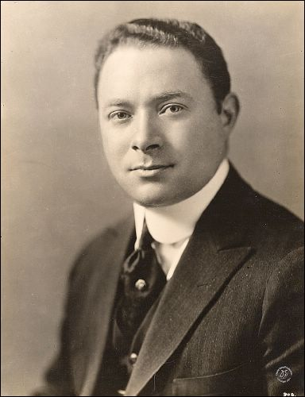

|
|


|
David SarnoffThis page aims to documnent/summarise the major events of David Sarnoff's tenure in office. This is all read and approved by His Excellency. |
1992 - ElectedNBCLand in 1992 was completely different to today. Instead of a planned socialist economy where power was delegated to local authorities, NBCLand was a free-market capitalist state, where the government held power over all regions of NBCLand. The 1992 election was highly controversial, as David Sarnoff won by getting barely enough votes in the Electoral College at the time. However, after his election he began to implement radical changes to NBCLand, transforming it into the nation its known as today. 2002 - 10 years in powerSarnoff's ten year anniversary was marked by a recession after a large tax cut that resulted in almost every major industry collapsing. NBCLand only fully recovered from this in 2007, and this decision is definitely the most talked about part of Sarnoff's tenure. Since 2007 however, NBCLand has experienced substantial economic growth, putting it above the pre-2002 collapse levels of economic output. 2016 - NBCLand gets internetDue to NBCLand's reluctance to interact with western nations, the Internet had slow growth ever since it was first established in the 1980s. Only a few citizens had gotten access to it, and even then the speeds were at 90s levels of slow. But, in 2016, after years of delegation, Sarnoff announced that NBCLand would finally get networking infrastructure to the common man. Though, it took around 4 years until everyone had gotten accustomed to the internet. 2020 - Brasilistan Incident[REDACTED] 2024 - Government WebsiteEight years had passed since NBCLand's internet access had begun expansion, and David Sarnoff thought it was high time to create a website for governmental purposes. And he did.  Sarnoff, circa 1982. |
This page is subject to heavy editing, as more events are digitalised during the NBCLand Committee to Put Everything Online's efforts to document more events that happened in NBCLand... online. |
 
This site is not affiliated with NBC nor ComCast. It is intended to be of parodic nature and nothing else. |